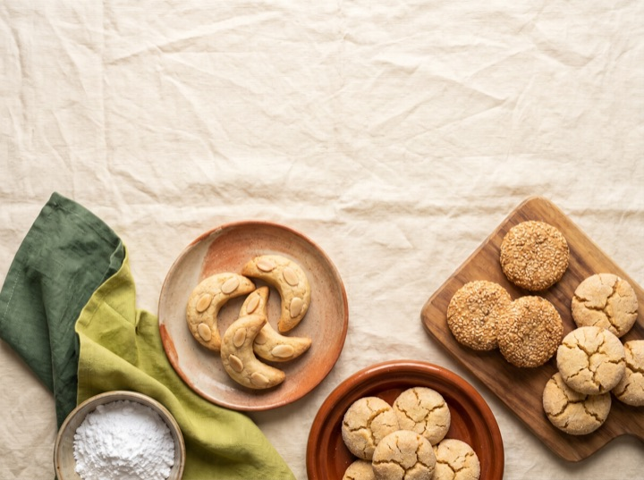
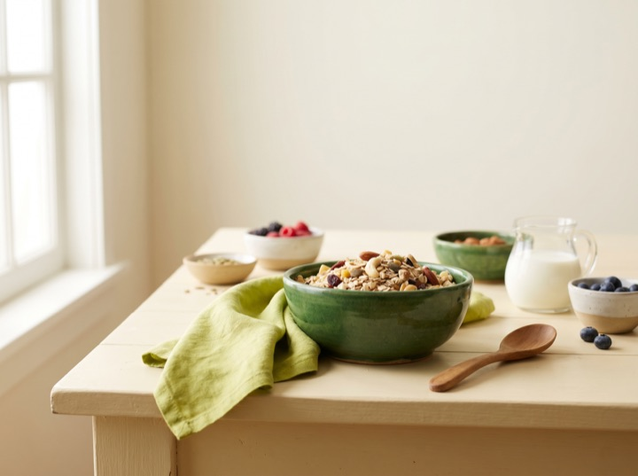
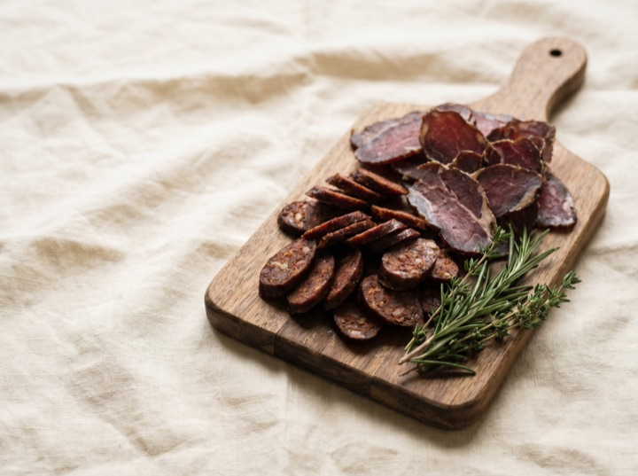
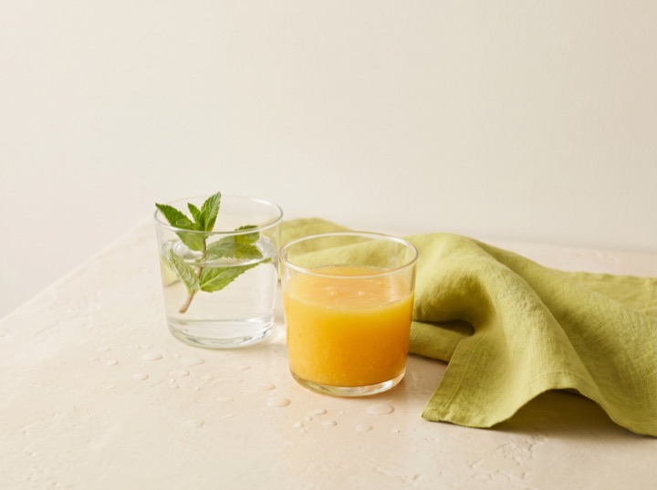
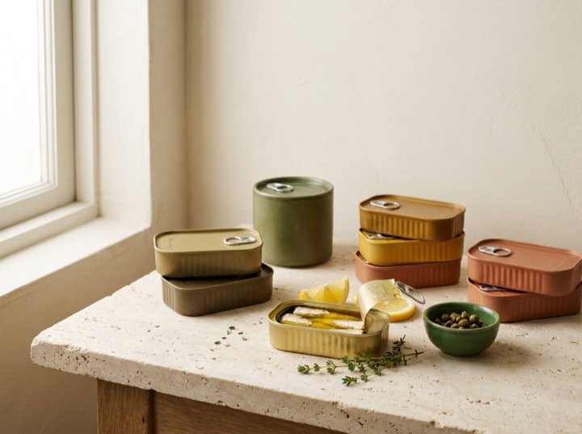
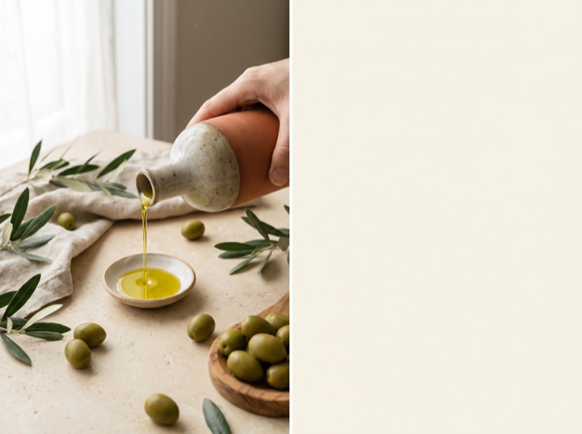
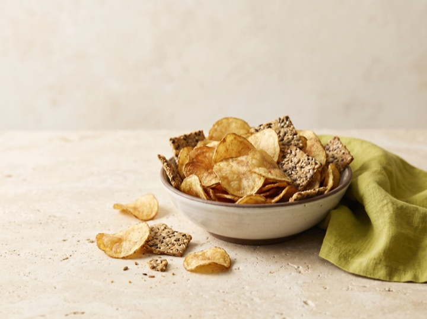
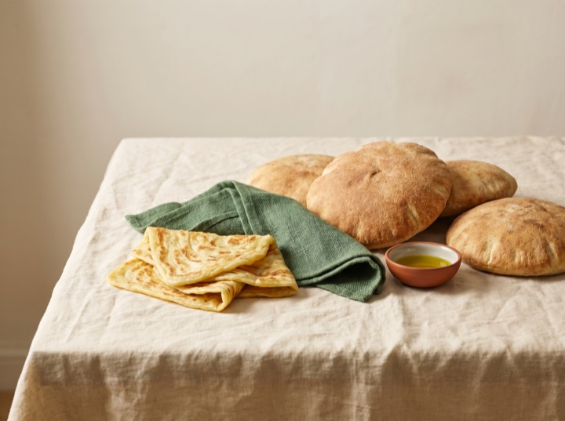
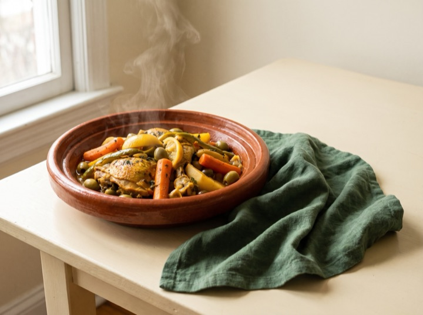
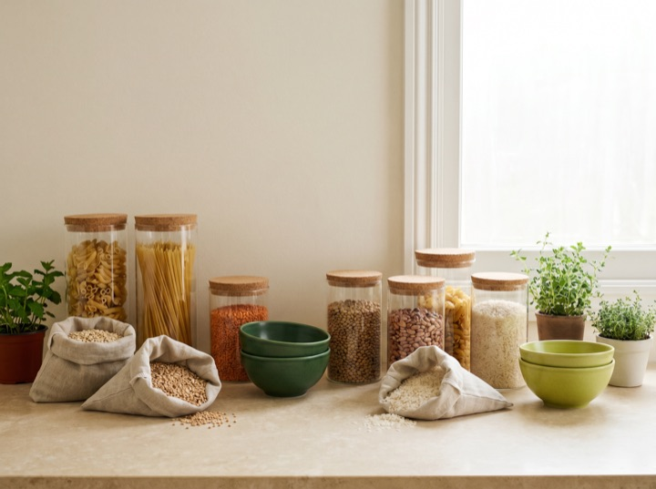

Catégories
2 089 produits rangés en 12 rayons — organisés par notre IA.

Biscuits191 produits

Céréales & petit-déj144 produits
Produits laitiers310 produits

Charcuterie & viandes16 produits
Boissons sucrées71 produits

Eaux & jus160 produits

Conserves84 produits
Épices & condiments241 produits

Huiles & graisses111 produits

Snacks & chips342 produits

Pain & viennoiseries84 produits

Plats préparés52 produits

Autres283 produits